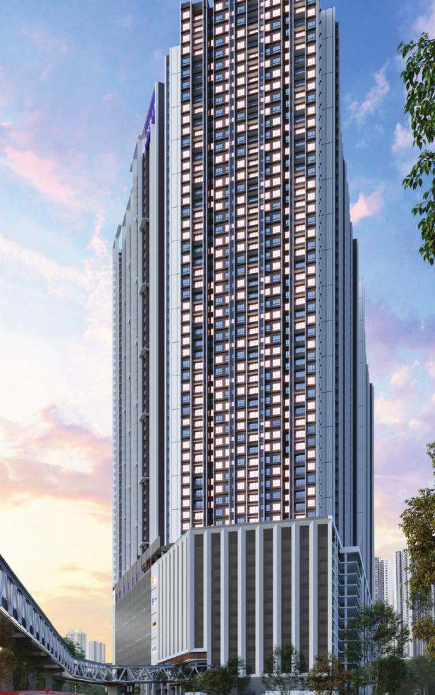
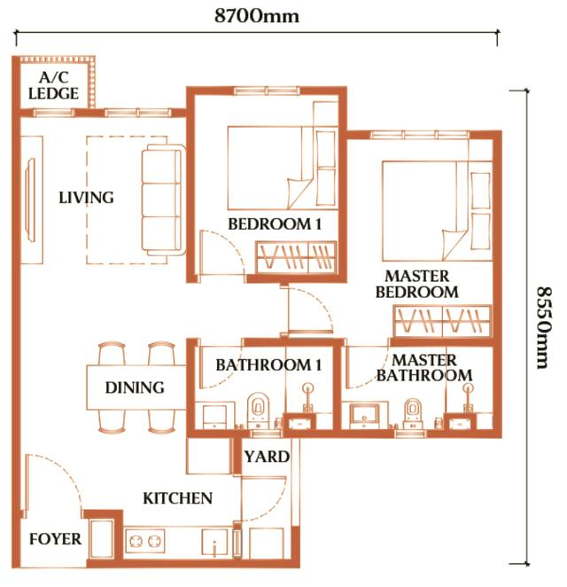
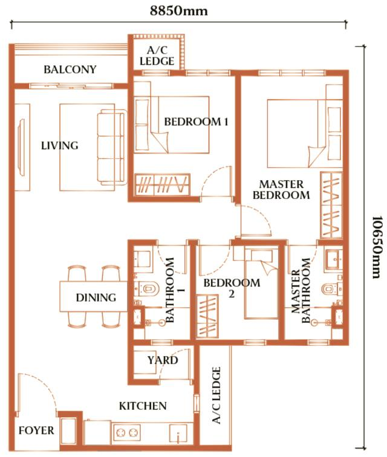
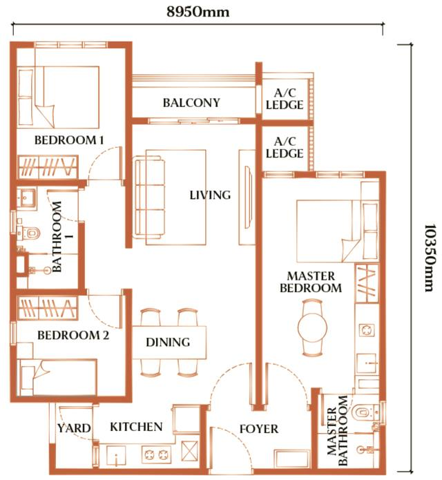

Dover Causeway Square
About Dover Causeway Square
Top Highlights
Project Details
| Dover Causeway Square | |
| Exsim Lumba Kuda Sdn Bhd All 19 Exsim projects → | |
Location
Approved link bridge to CIQ Integrated retail podium (approx. 90,000 sq ft) Level 12 podium facilities Level 57 sky BBQ and gardens Causewayz Square masterplan
Dover Causeway Square Floor Plans & Unit Types

Type D1

Type E1

Type F1
Who Should Consider Dover Causeway Square?
Investors
Families
Flexible Households
Monthly Instalment Estimate
Loan amount Down payment Total interest